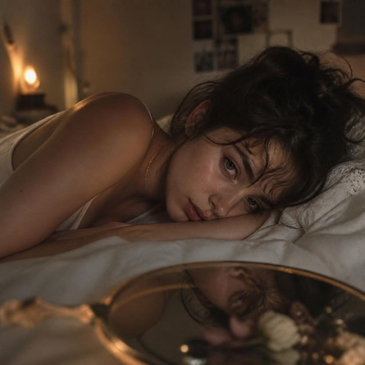
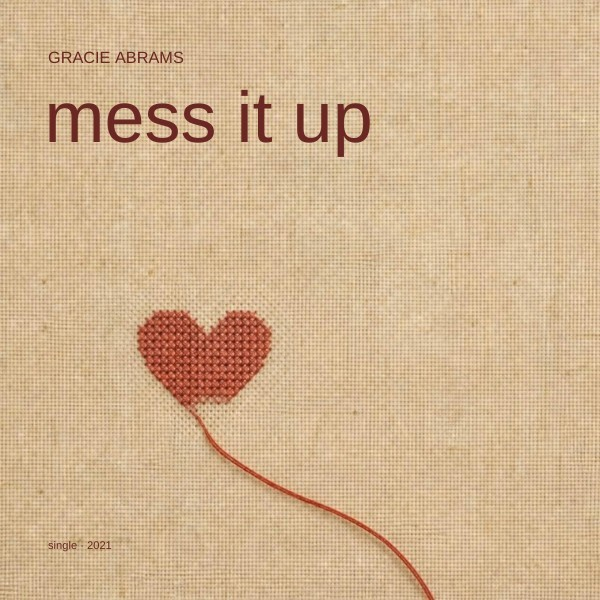
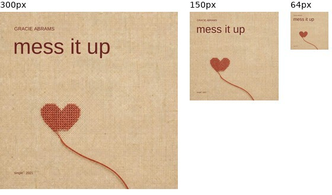
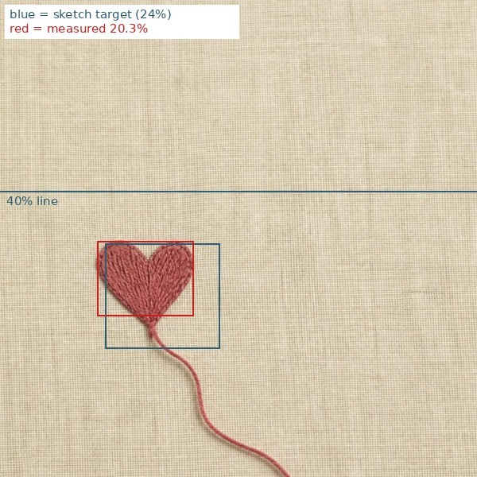
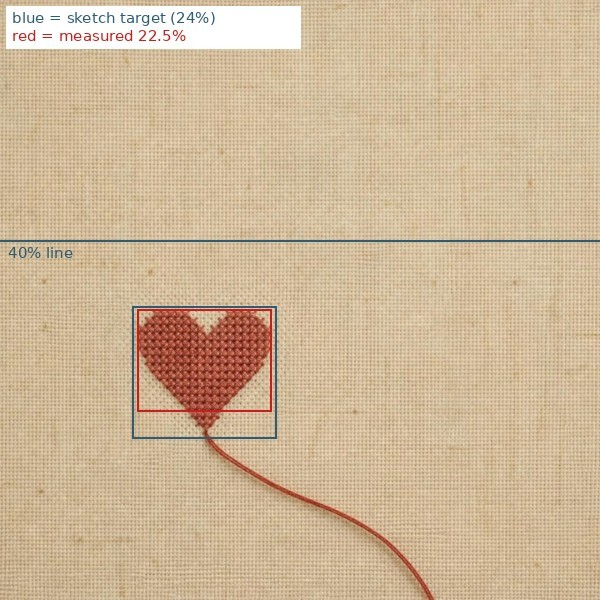
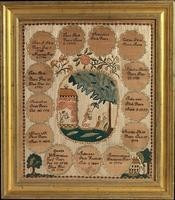
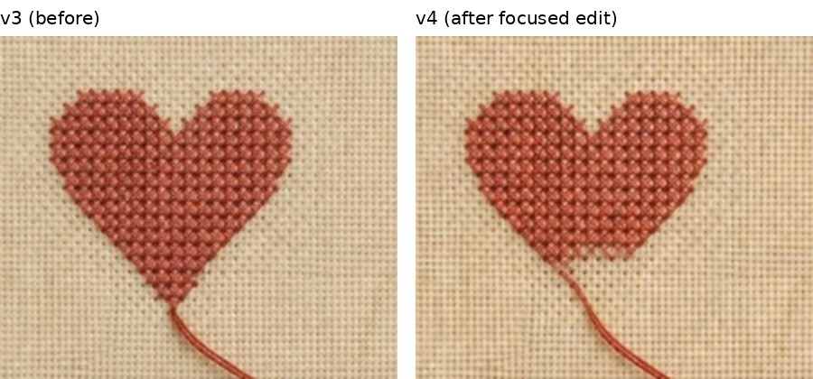

With no object, placement or material defined, the model reached for a generic sad-song image.
One small cross-stitched heart, one loose thread, and the fear of ruining something good.
By Shreya Ramanan · a student concept for Gracie Abrams' “Mess It Up” — not official artwork

The song is about being inside something good and being afraid you will be the one to ruin it. It is quiet and anxious rather than dramatic, so the cover had to be too.
A hand-stitched heart is something made slowly and carefully. A single loose thread suggests that one small pull could unravel all of it. The tension comes from self-sabotage rather than a breakup: tender, intimate, still hopeful. I kept the palette to oatmeal linen and one muted red and left most of the square empty, so the cover feels as restrained as the song.
The same thread became the interaction on this site's homepage, where visitors pull their own threads across the linen.
No other objects. Nothing to compete with the stitch.
Warm oatmeal ground, muted red floss, red-brown type (#6B2723).
Heart centred at 34% across, 62% down; about 24% wide.
The thread exits near 70%, pulling the eye off the edge.


From an uncheckable mood to one specific, measurable image.

With no object, placement or material defined, the model reached for a generic sad-song image.

Composition improved; material did not. The heart read as a padded patch and the thread as yarn.

A historic sampler supplied one role only: the stitch. The sketch kept control of the layout.
A focused edit unpicked the heart's point, and editable type finished the cover.
The same song, the same model. The only difference is how specific I was about what should be on the square, where, and made of what.
From the sampler I took only the small X-shaped stitches, faded silk floss, aged red and fine linen. I excluded its letters, verses, figures, border and layout.


168 px, lowercase, #6B2723
38 px, capitals
26 px, bottom left
8% of the 1400 px canvas
All type was kept editable in Canva rather than generated, so the letterforms stay exact and the hierarchy can be adjusted after generation.
Paraphrased from classmates' responses in the course critique.
The stitching first reads as homey comfort—then you notice it unravelling, and that unfinished discomfort is the song.Classmate response
Unpicking the bottom of the heart made the idea of slowly coming apart feel real rather than illustrated.Classmate response
Even with very few elements, the fabric itself carries the emotion: warm, handmade, personal.Classmate response
What worked. Turning a mood into measurable features made the biggest difference. The sketch controlled the layout, and one carefully assigned reference solved the material problem that prompting alone could not.
What changed. The project moved from a generic person to a single object, and the final edit added meaning by letting the heart begin to unravel.
Limitations and next time. I would choose the typeface earlier and test a serif in context, and run each prompt twice to separate real improvement from a lucky generation.
AI use. Canva AI generated the four image versions from my prompts, sketch and reference. I wrote the prompts, set the measurements, chose the reference and its single role, decided the focused edit, and set all typography by hand in Canva. Python was used only to overlay measurement guides.